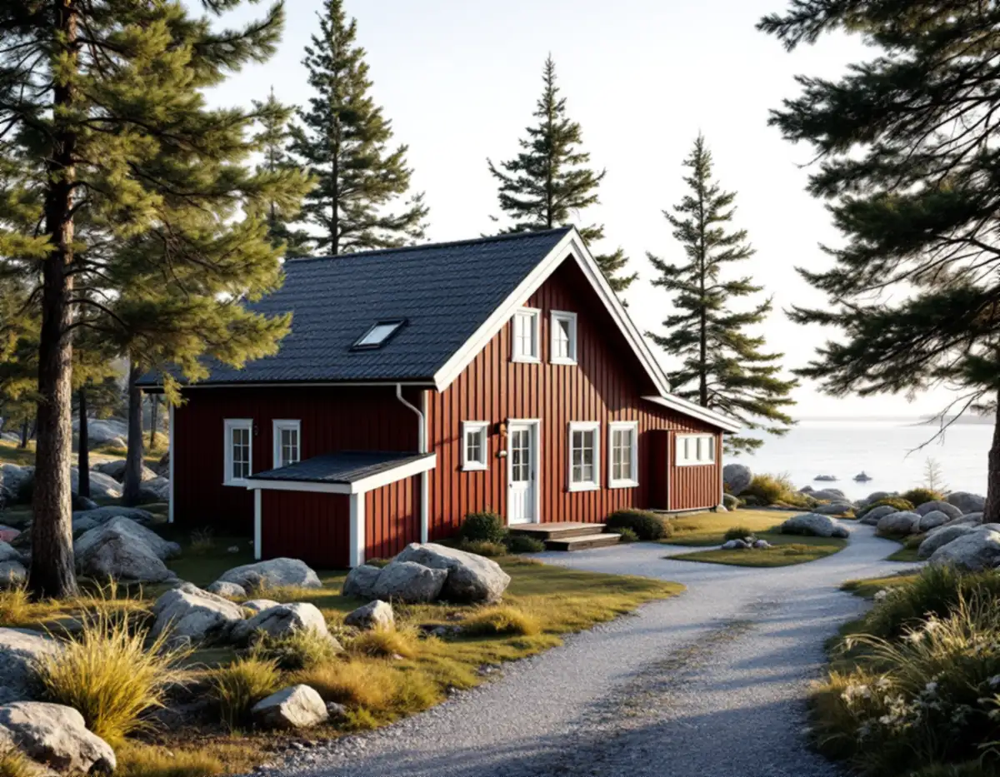
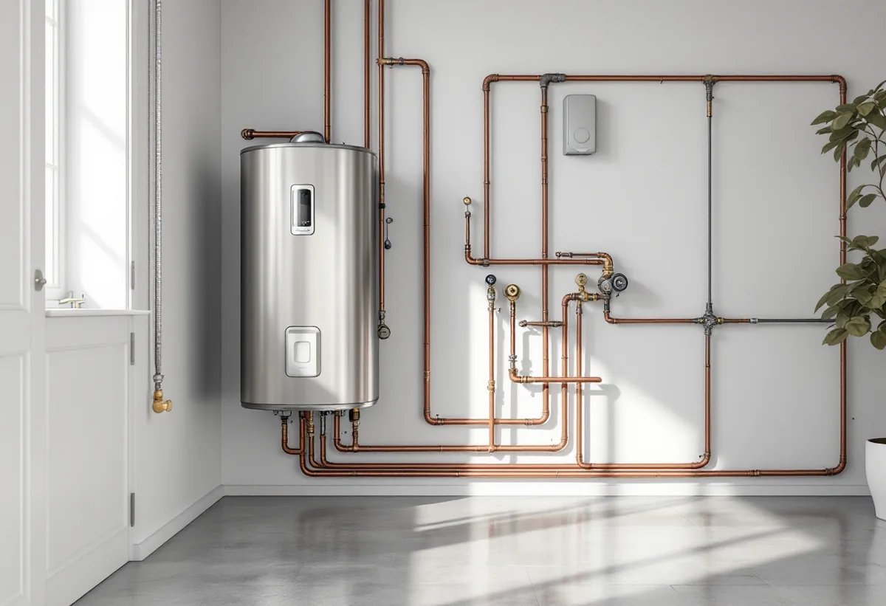
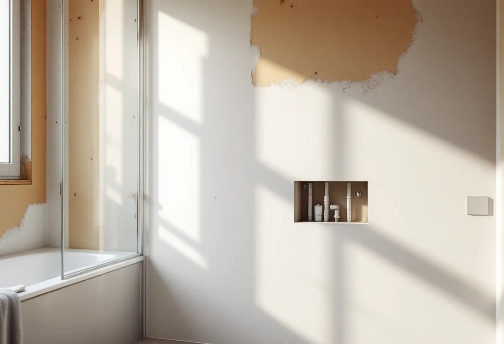

Platsbesök
Stomme, rör, beredare, avlopp och vattenkälla går vi igenom.

När ett hus på Värmdö totalrenoveras och rören byts gäller nya byggregler, regler för ledningarna på tomten och regler för varmvattnet.
Beskriv jobbet kort.
Något blev fel. Kontrollera uppgifterna eller ring 08 12 410 276.
Vi tittar på jobbet på plats innan du får offert.
Du ser vad som ingår och vad det kostar.
Vi drar av ROT direkt och sköter ansökan.
Geal Entreprenad AB, Bromma. Org.nr 559303-7566.

Geal Entreprenad AB totalrenoverar villor och fritidshus på Värmdö och planerar VVS:en för hela huset på en gång.
Värmdö kommun förklarar att Boverkets nya byggregler trädde i kraft den 1 juli 2025 och ersatte Boverkets byggregler, BBR, och de europeiska konstruktionsstandarderna, EKS. Under en övergångsperiod till och med den 30 juni 2026 kunde man välja gamla eller nya regler, och efter den 1 juli 2026 gäller bara de nya.
Reglerna utgår från funktionskrav för säkerhet, energi, hälsa och tillgänglighet, och byggherren måste kunna visa att lösningarna uppfyller dem genom dokumentation, beräkningar eller branschstandarder. Kontrollplanen ska redovisa vilket regelverk som tillämpas, hur de tekniska kraven uppfylls och vilka riskmoment och kontrollpunkter som finns.

När kommunen bygger ut vatten och avlopp görs en förbindelsepunkt till varje fastighet, normalt omkring en halvmeter från fastighetsgränsen. Kommunen ansvarar för ledningarna fram till förbindelsepunkten och fastighetsägaren för ledningarna därifrån fram till huset, och kostnaden för ledningsdragningen på fastigheten tillkommer.
Inom ett verksamhetsområde för kommunalt vatten och avlopp är fastighetsägaren skyldig att betala avgifter, och när förbindelsepunkten är upprättad ska anläggningsavgiften betalas. Ansluts huset i samband med totalrenoveringen planerar vi de nya ledningarna inomhus så att de möter servisen på rätt ställe.
Värmdö kommun skriver att legionellabakterier växer i temperaturer mellan 20 och 45 grader, främst i vattenledningar, och särskilt i blindledningar, termostatblandare och duschslangar. I varmvattenberedaren ska temperaturen vara minst 60 grader, vid tappstället minst 50 och högst 65 grader, och kallvattnet ska hålla högst 18 grader.
Kommunen råder att blindledningar tas bort, att varm- och kallvattenledningar isoleras så att de inte påverkar varandra och att handdukstorkare, golvvärme och andra värmare inte kopplas på cirkulationsledningar för tappvarmvatten. När alla rör ändå byts är det rätt tillfälle att bygga bort gamla blindledningar.
Dricksvattnet på Värmdö kommer från kommunens vattenverk och från Stockholm vatten via Nacka, och kommunen köper ungefär hälften av behovet från Stockholm vatten. Vattnet från Ingarö vattenverk beskrivs som mellanhårt till hårt, ungefär 9–11 °dH, medan Stockholm vattens vatten är mjukt, kring 4,5–5 °dH.
Vi frågar därför var husets vatten kommer ifrån när blandare, beredare och rör väljs. Om badrummet kan du läsa under badrumsrenovering på Värmdö, om köket under köksrenovering på Värmdö och om tjänsten i stort under villarenovering.
Värmdö kommun beskriver energideklarationen som en redovisning av husets energianvändning, med uppgifter om energiprestanda, ventilationskontroll och eventuell radonmätning. Den görs av en oberoende expert och gäller i tio år. När en bostad säljs eller hyrs ut ska energiprestandan anges i annonsen, och saknas deklaration får köparen låta upprätta en på säljarens bekostnad senast sex månader efter tillträdet.
En totalrenovering ändrar ofta husets energiprestanda. Vi sparar uppgifter om isolering, fönster, ventilation och värme så att en ny deklaration blir enkel att göra.
Stomme, rör, beredare, avlopp och vattenkälla går vi igenom.
Kontrollplanen tas fram enligt de nya byggreglerna.
Rivning, stomme, VVS, el och ytskikt står var för sig.
Gamla rör och blindledningar rivs ut och materialen sorteras.
Nya ledningar, beredare, el, isolering och ytskikt.
Vi går igenom huset, temperaturerna och dokumentationen med dig.
För ett småhus ger Skatteverket rotavdrag för att dra in och reparera el-, vatten- och avloppsledningar, också vid indragning av kommunalt vatten och avlopp, och för att installera blandare, toalett, dusch och element. Rotavdrag ges för en bostad som du äger och bor i eller använder som fritidsbostad.
Avdraget är högst 30 procent av arbetskostnaden och högst 50 000 kronor per person och år. Material och resor ger inget avdrag.
Husets storlek, hur mycket av stommen som ändras, om alla rör byts, anslutning till kommunalt vatten och avlopp, el och vilka ytskikt du väljer. Efter ett gratis platsbesök får du ett skriftligt kostnadsförslag.
Renovera hela huset eller lägenheten.
Villarenovering →Takbyte, takbesiktning och plåtarbeten.
Takläggare på Värmdö →Skärgård, vind och fritidshus.
Takrenovering på Värmdö →Fritidsområden, kulturmiljö och avlopp.
Attefallshus på Värmdö →Brunnsvatten, salt och eget avlopp.
Badrumsrenovering på Värmdö →Byggrätt, PFO-områden och strandskydd.
Byggföretag på Värmdö →Röd panel, vita snickerier och båthus i skärgårdsbyarna.
Fasadmålning på Värmdö →Sommarvillor, skyddade hus och helårsboende.
Fasadrenovering på Värmdö →Gustavsbergs bevarandevärda fönster.
Fönsterbyte på Värmdö →Glasverandor och äldre fönster.
Fönsterrenovering på Värmdö →Fritidshus som blir permanentbostäder.
Golvläggare på Värmdö →Gamla brädgolv och skonsam slipning.
Golvslipning på Värmdö →Fritidshus, eget avlopp och Gustavsberg.
Köksrenovering på Värmdö →Plåttak och beslag på Värmdö.
Plåtslagare på Värmdö →Fritidshus som blir helårshus.
Snickare på Värmdö →Anmälan, kulturmiljö och tak i skärgårdsbyarna.
Takbyte på Värmdö →Riva eller spara tapetlagren.
Tapetsering på Värmdö →Fritidshusplaner och lovfria 30 m².
Tillbyggnad på Värmdö →Skärgårdshus, fritidshus och bruksmiljö på Värmdö.
Målare på Värmdö →Eller ring 08 12 410 276, mån–fre 08–17.
Beskriv jobbet kort.
Något blev fel. Kontrollera uppgifterna eller ring 08 12 410 276.